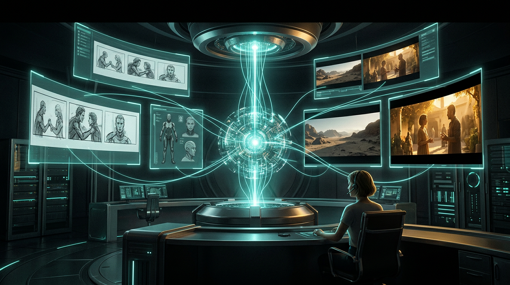
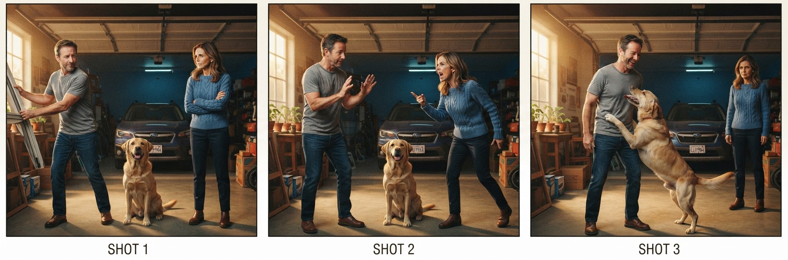

A film crew is a distributed system: specialized workers, typed handoffs, hard ordering constraints, and a continuity supervisor whose whole job is catching state violations. Generative models made the individual render cheap. They did nothing for the coordination — and coordination is the movie. This is a three-part engineering series on collapsing that coordination into one director agent, built on a real MCP + Skills pipeline.

A generative model is a render function. A studio is a scheduler, a state store, and a set of invariants over that state. The Agentic Studio is the claim that the second thing — not the first — is now buildable as an agent.
The market is flooded with better render functions: text-to-image, text-to-video, text-to-audio. They all have the same shape — one prompt in, one asset out, no memory of the last asset or the next one. A film is the opposite: N assets that must agree on a character's face, a set's geometry, a light's direction, and the 180° line, across every cut. Getting N stochastic renders to agree is not a prompting problem. It's a systems problem: shared state, ordering, validation, and a feedback loop.
That's what the Agentic Studio is — and every part of it maps to something you'd recognize from building any stateful distributed system.
In plain terms. A text-to-image model is a wildly talented freelance illustrator who takes one commission at a time — and forgets you the instant it's delivered. Ask for "the same hero" twice and you get two different people, because nothing carries over between jobs. A studio is the production office around that illustrator: it keeps the series bible, hands every artist the same character sheet, enforces the house style, and rejects the panel where the hero's jacket changed color. The illustrator makes a picture; the office makes a coherent body of work. Only the second one is a film — and the office, not the illustrator, is what we're building.
This is the "character sheet" made literal — generated once at the start of a project and reused in every shot the character appears in. Front, 3/4, profile, and back views plus a colour key, so the same person shows up scene after scene instead of a new look-alike each render. It is the studio's memory, not the model's.
The hard part is the invariant, and the invariant is cross-asset consistency:
None of those are prompt tweaks. They are state, ordering, and validation — which is exactly why the studio is an agent, not a bigger model.
A quick walkthrough of Movie Studio — the chat UI, the live activity panel, and a scene coming together end to end:
Below, the assets behind a photorealistic short built entirely by the studio (cast → style → storyboards → video). The global style reference and the three character sheets that anchor identity across every shot:


Per scene, a people-free set plate and a 3-panel micro-shot storyboard (the per-scene deliverable):


…then each scene is animated into a continuous clip — the four final videos:
Strip the film vocabulary and the machine is six pieces:
film_grammar.validate_plan (pure logic) checks continuity rules and persists a plan only with zero error-severity violations — before a single GPU-second.QC_MAX_TRIES).movie:// URI; pixels enter context only on an explicit read, which is what makes the parallel fan-out affordable.MCP carries the credentialed capability; Skills carry the craft — the director's decision procedure and the continuity rules — loaded by progressive disclosure, so the know-how costs ~one line of context until it fires.
For leaders and architects. Why the next generation of multimedia is orchestration, not generation; the render-function-vs-studio distinction; and why MCP + Skills + cheap inference make the coordination layer buildable now. → Read Part 1 →
For builders. The load-bearing decision — the pre-production barrier — and the full skill+MCP call path, with sequence diagrams. Deterministic gate plus critic loop as the reliability spine, and the context economics that make the fan-out scale. → Read Part 2 →
The invariants above, taken seriously: identity across shots, continuity across scenes, cross-domain compositing, and the unit economics ($/scene, $/QC retry, $/second of video) that make the marginal cost of a scene approach zero. Where it goes: video and sound as the same pipeline, human-in-the-loop as direction not babysitting. → Read Part 3 →
Built on a real MCP + Skills film-production pipeline. The foundational piece on the two standards is MCP and Skills.